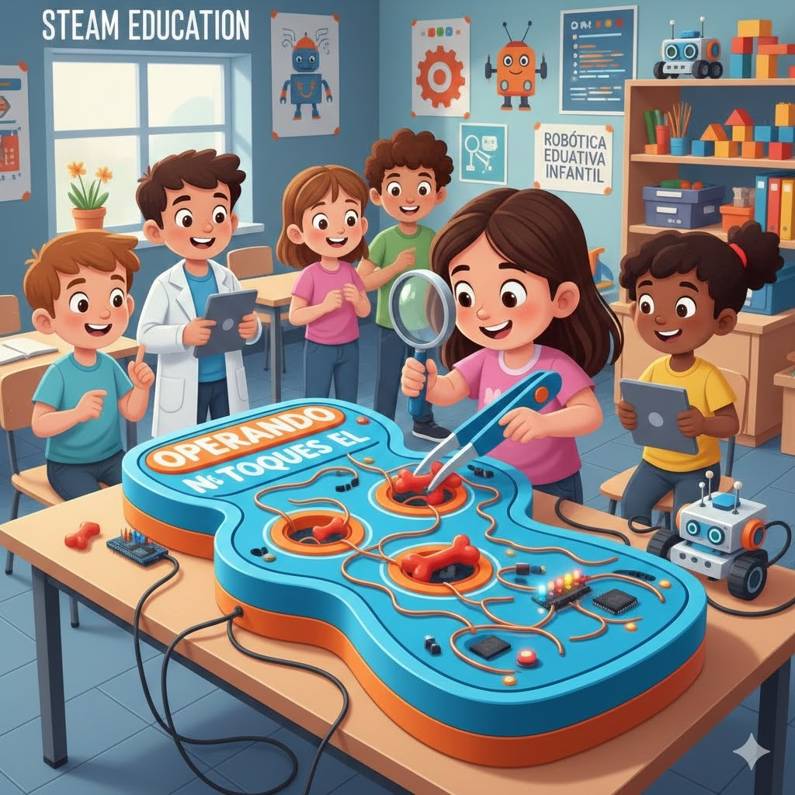
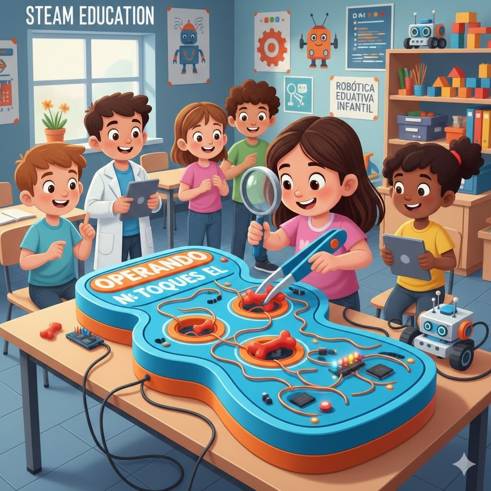

BIENVENIDOS

BIENVENIDOS

ROBOTICA
El presente proyecto se orienta al diseño e implementación de un recurso de robótica educativa con enfoque lúdico, dirigidos a niños de 3 a 6 años, con el propósito de fortalecer el desarrollo de la motricidad fina y gruesa. La propuesta consiste en integrar el uso de Arduino y actividades prácticas que permiten a los niños interactuar de manera activa mediante el movimiento, la manipulación y la exploración, promoviendo un aprendizaje significativo a través del juego.
Enfoque pedagógico adoptado (construccionismo, ABP, STEAM).
Constructivismo: Los estudiantes aprenden mejor cuando construyen un aprendizaje significativo.A través de la manipulación de materiales y herramientas, el estudiante desarrolla habilidades cognitivas, creativas y motoras, reforzando el aprendizaje mediante la acción.
Aprendizaje Basado en Proyectos (ABP)
Los estudiantes trabajan en proyectos relacionados con situaciones de la vida diaria. A través de estos proyectos investigan, proponen ideas, crean, trabajan en equipo y presentan lo que han aprendido y se logra que el estudiante se permita ser creativo,reflexivo, tomar decisiones y encontrar soluciones de manera responsable.
En este contexto, se evidencia la necesidad de fortalecer la motricidad fina y gruesa, así como las habilidades cognitivas y socioemocionales de los estudiantes, a través de actividades lúdicas, manipulativas y experienciales. Por ello, la propuesta “Neurobot a las TIC” integra la robótica educativa con el enfoque constructivista, el Aprendizaje Basado en Proyectos (ABP) y el enfoque STEAM, promoviendo el uso de Arduino y materiales didácticos que permiten a los niños aprender haciendo, explorando y jugando.
Asimismo, el proyecto responde a las demandas de una educación contemporánea que incorpora las Tecnologías de la Información y la Comunicación (TIC) como medio para estimular la creatividad, el pensamiento lógico, la coordinación motora y el trabajo colaborativo, generando ambientes de aprendizaje inclusivos, motivadores y contextualizados.
Objetivo General:
Objetivos Específicos
Obra publicada con Licencia Creative Commons Reconocimiento 4.0